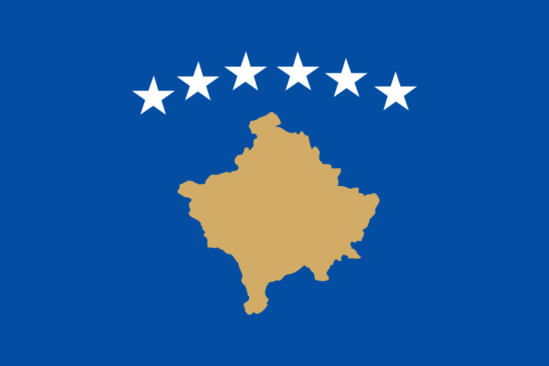
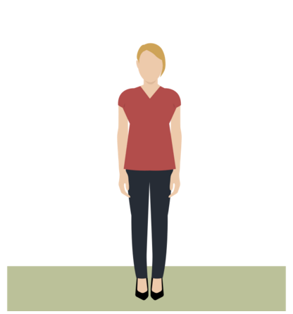

How equal are you in Kosovo?
On November 19, 2015, BBC News published "How equal are you?": an excellent interactive analysis on gender inequality across several countries.
Unfortunately, Kosovo wasn't one of the analyzed countries. In response to this omission, Kosova Women's Network and Open Data Kosovo have teamed up and produced "How equal are you in Kosovo?"
BBC News, please integrate our data into your work. Also, please don't sue us for re-using your assets. We can change them if this upsets you!

How equal are you in Kosovo?
Are you...
Proportion of university graduates who are men
40%
Proportion of women and men in, or looking for, work
Around one in six senior officials, managers and legislators are female.
14%
86%
Share of government ministers that are women
10%

Credit
BBC News' "How equal are you?" was produced by Nassos Stylianou, Charlotte Thornton and Richard Bangay with additional data research by Olivia Dowsett.
The "How equal are you in Kosovo?" spinoff was produced by Kosova Women's Network and Open Data Kosovo with data research by Elizabeta Murati.
Source
Proportion of university graduates who are women:
ESK (Enti i Statistikave te Kosoves), table 41, page 58.
Proportion of women and men in, or looking for, or work:
Kosovo Labor Force Survey 2014, page 24, figure 9.
Around one in six senior officials, managers and legislators are female:
Labor Force Survey 2014, page 13, table 1.9.
Number of women who work as senior officials, managers and legislators is 3,800.
Number of men who work on Legislators, senior officials and managers is 23,000.
23000 / 3800 = 6.05, as result 1 in 6 officials, managers and legislators are female.
Share of government ministers that are women:
Republic of Kosovo, The Office of The Primer Minister.
2 women and 19 man. 2/21 * 100 = 9.5%.